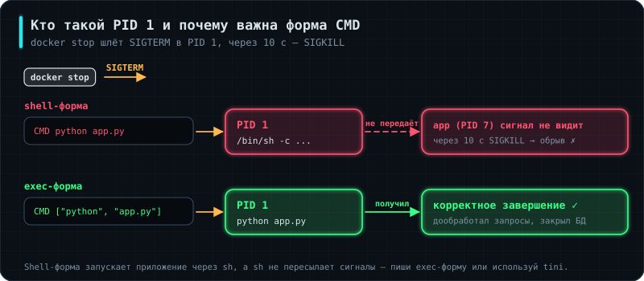

Аналогия: если между тобой и собеседником стоит переводчик, который не переводит, разговора не будет — сколько бы ты ни говорил.
Два вопроса, которые задают почти всегда: чем CMD отличается от ENTRYPOINT и почему приложение в контейнере не завершается корректно.
CMD против ENTRYPOINT. ENTRYPOINT задаёт саму команду, CMD — аргументы по умолчанию к ней. Аргументы, переданные в docker run, заменяют CMD, но не трогают ENTRYPOINT:
ENTRYPOINT ["python", "app.py"]
CMD ["--port", "8000"]
docker run myapp запустит python app.py --port 8000, а docker run myapp --port 9000 — с новым портом. Если написать всё в CMD, то docker run myapp bash просто заменит команду целиком — иногда это удобно для отладки, а иногда нежелательно.
Форма записи — важнее, чем кажется. Есть shell-форма (CMD python app.py) и exec-форма (CMD ["python", "app.py"]). Различие не косметическое:
При shell-форме Docker запускает /bin/sh -c "python app.py", и процессом с PID 1 становится оболочка, а приложение — её потомком. При остановке контейнера SIGTERM получает только PID 1, то есть оболочка, а она не передаёт сигнал дальше. Приложение не узнаёт, что его просят завершиться, и через несколько секунд получает SIGKILL.
Практическое следствие прямо связано с 2.5 Бэкенд-сервис, §12: обработчик SIGTERM там написан, корректное завершение реализовано — и всё это бесполезно, потому что сигнал до приложения не доходит. Каждый деплой обрывает запросы пользователей, и причину ищут в приложении, хотя она в одной строке Dockerfile.
Всегда используй exec-форму — с квадратными скобками. Если запуск действительно требует оболочки (например, скрипт с подстановкой переменных), последней командой в скрипте пишут exec:
#!/bin/sh
# ... подготовка ...
exec python app.py # процесс заменит собой оболочку и унаследует PID 1
Обратите внимание, что CMD в §8 записан в shell-форме — как раз тот случай, который стоит исправить.